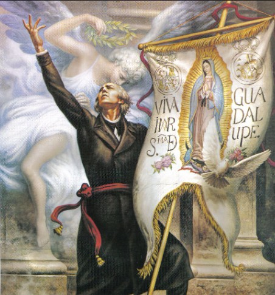
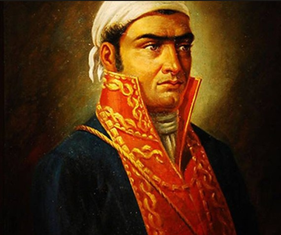
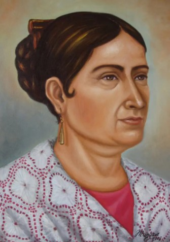
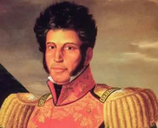

Personajes Ilustres

Miguel Hidalgo y Costilla
Padre de la Patria (1753 - 1811)Sacerdote y militar novohispano considerado el iniciador de la Independencia de México. La madrugada del 16 de septiembre de 1810 hizo sonar las campanas de la parroquia de Dolores para convocar al pueblo a levantarse en armas contra el dominio español.
Durante su avance al mando del ejército insurgente, promulgó el histórico decreto de abolición de la esclavitud en Guadalajara, sentando las bases sociales y morales del movimiento independentista.

José María Morelos y Pavón
Siervo de la Nación (1765 - 1815)Religioso, político y militar mexicano que asumió el liderazgo del movimiento insurgente tras la muerte de Hidalgo. Destacó como un formidable estratega militar al organizar la segunda etapa de la guerra de independencia.
Convocó al Congreso de Anáhuac en Chilpancingo y presentó el documento "Sentimientos de la Nación", base fundamental de la primera constitución del país, donde promovía la libertad, la igualdad social y la soberanía popular.

Josefa Ortiz de Domínguez
La Corregidora (1768 - 1829)Insurgente novohispana y pieza clave en la conspiración de Querétaro. Esposa del corregidor Miguel Domínguez, utilizó su posición social para coordinar reuniones secretas disfrazadas de tertulias literarias a favor de la causa independentista.
Al ser descubierta la conspiración en septiembre de 1810, logró enviar de manera clandestina un mensaje crucial a Ignacio Allende y Miguel Hidalgo, permitiendo que el movimiento se anticipara e iniciara la lucha armada de inmediato.

Vicente Guerrero
Consumador de la Independencia (1782 - 1831)Militar y político mexicano que mantuvo viva la chispa de la resistencia insurgente en las montañas del sur durante el periodo más difícil de la guerra. Destacó por su inquebrantable lealtad a la causa, inmortalizando la frase: "La Patria es primero".
En 1821 pactó con Agustín de Iturbide el histórico Abrazo de Acatempan y la firma del Plan de Iguala, logrando la unión de las fuerzas armadas en el Ejército Trigarante y consumando la Independencia de México.